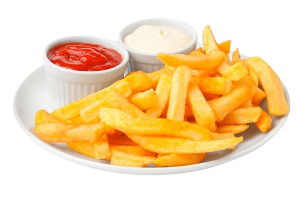
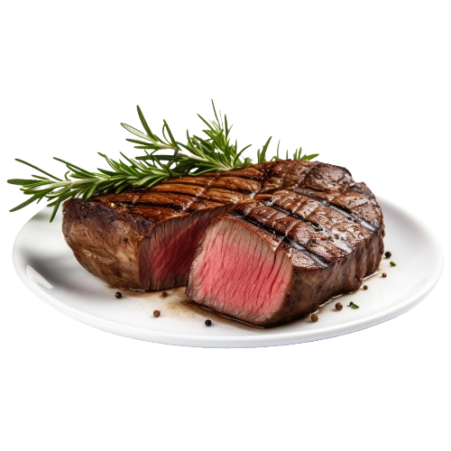

RECIPES

- Ground beef
- Hamburger buns
- Lettuce
- Tomato slices
- Onion slices
- Pickles
- Cheese slices
- Condiments (ketchup, mustard, mayonnaise)
Cooking Time: 8-10 minutes

- Potatoes
- Vegetable Oil
- Salt
- Chilli Sauce (Optional)
- Mayonnaise Sauce (Optional)
Cooking Time: 5-7 minutes

- Spaghetti pasta
- Tomato sauce
- Ground beef or Italian sausage (optional)
- Garlic & Onion
- Olive oil
- Salt and pepper
- Parmesan cheese (optional)
Cooking Time: 10-15 minutes (Sauce), 8-10 Minutes (Pasta)

- Steak (ribeye, sirloin, filet mignon, etc.)
- Salt and pepper
- Olive oil or butter
- Thyme Leaves
Cooking Time: 8-10 minutes